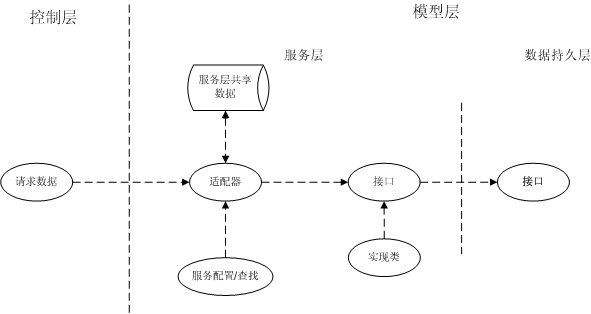

2009年05月12日 星期二 03:44 P.M.
模型层设计
模型层可以说是运行时系统的工作核心，基本上所有的业务逻辑处理和数据操作都在该层实现。在信息系统中，该层一般会被分成业务服务层（service）和数据访问层(DAO)。服务层职责是对模块的“原子用例”进行实现，持久层用于配合服务层的数据存储操作。在这两个细分的层次中的所处理的javabean名称也不一样，在service中，处理的是bussiness object(bo)，在DAO中，处理的javabean称为persistent object(po)。虽然他们代表的意义和职能不一样，但表现形式却有可能相同。基于职责的考虑，除非难以本地实现的需求，一般不推荐把业务逻辑放到数据库的存储过程中，因为数据库上操作是由DBA维护的，web系统无法把控制权延伸到数据库上。而且这样破坏了系统的完整性，同时也不利于移植和维护。
Service层设计
首先来分析业务服务层的构造：

http://p.blog.csdn.net/images/p_blog_csdn_net/lemonfamily/b82a646a5c3441498c2e013b1afd90d3.png
服务层与控制层的设计结构基本相同，也是通过一个导航配置查找服务接口，并通过接口获取所需要的业务数据。在控制层与模型层的通信中，特别加入了适配器，功能类似过滤器，但这里不是用于安全性的过滤，在之前我们讨论分层时都没涉及到安全性方面的设计，主要考虑安全性每个层次都可能出现，应该作为一个完整框架单独进行设计，在web的3层中，它是以“插件”的形式存在。这里的适配器主要用途在于对用户请求进行“分级”。所谓“分级”是根据不同角色或权限对请求进行相应的限制。一个例子：不同的销售人员进行的产品查询就需要限制查询出的产品属于该销售人员所销售。通过适配器时，适配器会根据服务配置中的配置从服务层共享数据中获取所需要的额外信息，并附加到请求数据中，然后再经过服务配置查找相应的服务接口。在分布式系统中，单点登陆时会设立一个用户注册中心用于保存用户的基本信息，服务层的共享数据与注册中心的数据同步。如果不使用缓存，使用接口调用代替也是可以的。
接口是不需要“分级”的，接口上的功能点（方法）应该是细粒度的。以上面的查询为例，销售人员查询对应的功能点所需要的参数必定有个userid来限制输出的结果集。而不同的角色或等级的查询也需要不同的调用接口，如主管和销售人员有不同的查询接口以让主管可以获得到更大范围的结果集。实现类对接口的实现可以采用如控制层的方式使用“依赖注入”，这样就需要为其单独设计一个配置文件和一个管理类。如果考虑核心业务的性能问题，或者不需要统一管理业务实现，也可以只采用Service service = new ServiceImpl()式的代码声明。
Service层的设计原则不需要过多的配置，甚至不用任何的配置也能达到业务逻辑与数据持久层的解藕。由于业务层是改动最为频繁的部分，我们需要尽量设计出可以“良性循环”的接口，因为输入输出的格式约定的变更会引起与之联系的上下层的改动，而且这种改动有可能引起“联动效应”导致一些难以预料的隐患，如果能使用同一个javabean作为输入输出参数可以有效的避免这种现象，虽然它确实增加了数据传输的成本。 但相对于后期的更新维护所带来的效益来说，这点是微不足道的。
DAO层设计
Dao层并不是数据持久层，它是操作持久数据的一个访问对象。所谓的数据持久层应该由数据库或文件或内存等物理存储设备充当。Dao的责任在于提供给service访问数据的能力并负责管理数据操作的监测与性能优化。Dao同样需要提供接口，供service调用，实现需要在另一个模块中进行。
数据访问操作可以说是整个web系统中响应速度最为缓慢的一环，也是制约web性能的一个瓶颈。因此需要根据访问对象的特点与访问的频度进行优化，缓存和预编译这两种技术在这里体现得淋漓尽致。无论是文件操作还是数据库访问，缓存的重要性不言而喻，如果系统使用自身特有的数据访问语法，就需要使用预编译技术，预编译需要进行复杂的词法、语法、语义分析，然后进行匹配、拆解、合并、优化的反复循环，最终达到比较高效的数据访问。预编译后的内容也同样需要使用缓存，以降低编译所带来的性能损耗。使用系统自身的语法进行数据访问，可以避免来自上层蹩脚的请求语义直接访问持久数据带来的低下性能，而且可以统一开发人员对不同类型的持久数据的访问方式，减少开发人员编码量和维护成本。但其缺点也是显而易见的，编译器开发难度大，特别是想兼容多种类型的数据访问时，性能是否得到改善还得看开发编译器人员的水平。同时新的数据访问语法也导致了学习成本大大增加。
对于缓存的策略，也是仁者见仁，智者见智。但一般都会参考操作系统原理中的页面调度算法。比如FIFO（先进先出）、LRU（近期最少使用）、LFU（最近最不常用也称最佳淘汰）等等。
最后，我们来讨论一下实现三层模式框架的优缺点：
优点：不言而喻，良好的解藕设计理念为模块化开发奠定了坚实的基础。在解藕的系统上使用或开发可复用构件是一件很惬意的事情。层与层之间职责分明，分工明确，使得无论是页面设计人员还是程序开发人员或是数据库设计人员找到了各自发挥的空间，他们可以相互独立开发而互不干扰，他们可以通过设计文档的接口描述很快找到上下文衔接的方法避免不必要的冲突，这不仅减少了开发中的交流成本，提高了大规模系统的开发效率，也为系统分析人员和项目经理腾出之前在职责协调中的浪费的大量时间而专于业务需求的管理和技术的改进。
缺点：在任何一个基础平台，无论是J2EE还是.NET，它们的长处都在于数据的处理而不在于数据的展现，web的表现技术和桌面应用程序的表现技术相比，无论是表现手段、人性化还是响应速度都有所欠缺。实现一个相对复杂的表现方式，开发人员需要付出大量的精力，开发的效率会因此大打折扣。这一点，在开发小型系统上尤其明显。基于三层的web系统在层间通信时会带来性能损耗，复杂的配置降低了系统的负载能力，不适合将其作为门户网站等对并发要求很高的系统。
Web分层设计与研究的三层模型设计到现在基本完成，在这里我们详细的讨论了各个层次的结构和责任，设想了这三层的实现方式。但真正要以三层模式为核心盖起完整的框架还有很多工作要做，一个可以在实际生产中发挥威力的系统框架往往是经过千锤百炼才形成的。尽管如此，我们仍然有必要为了去验证我们的设想而接受这种挑战，要提高自身的领域建模能力，这一步是必不可少的。